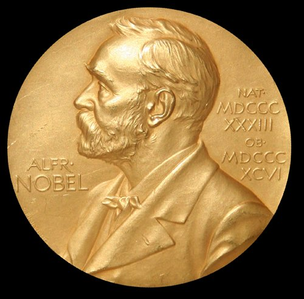

नोबेल पुरस्कार 2026: रसायन विज्ञान का नोबेल हेनरी बी. केगन और केंसो सोई को — दर्पण प्रतिबिंब का रहस्य सुलझाने वाली खोज

रसायन विज्ञान का नोबेल पदक — 2026 में यह सम्मान हेनरी बी. केगन और केंसो सोई को असममित कार्बनिक संश्लेषण में अरैखिक प्रभावों और स्व-उत्प्रेरण की खोज के लिए दिया गया। (छवि: विकिमीडिया कॉमन्स)
स्टॉकहोम की रॉयल स्वीडिश विज्ञान अकादमी ने 7 अक्टूबर 2026 को रसायन विज्ञान का नोबेल पुरस्कार घोषित कर दिया है। इस वर्ष यह सम्मान फ्रांस के हेनरी बी. केगन और जापान के केंसो सोई को संयुक्त रूप से दिया गया है। इन्हें यह पुरस्कार "असममित कार्बनिक संश्लेषण में अरैखिक प्रभावों और स्व-उत्प्रेरण की खोज" के लिए मिला है।
कई अणु ऐसे होते हैं जिनके दो रूप एक-दूसरे के दर्पण प्रतिबिंब होते हैं — जैसे हमारे बाएँ और दाएँ हाथ। जीवित जीवों में इन दोनों में से केवल एक ही रूप पाया जाता है। यह रासायनिक असममितता आखिर पैदा कैसे होती है, यह लंबे समय से विज्ञान का एक बड़ा रहस्य था। केगन और सोई ने इसी रहस्य का समाधान खोजा है। अकादमी बोर्ड की स्थायी सचिव एलन मून्स ने कहा, "इस वर्ष का पुरस्कार रसायन विज्ञान को अपने दर्पण प्रतिबिंब का चुनाव करना सिखाने के बारे में है।"
खोज की कहानी: हेनरी केगन ने दिखाया कि असममित संश्लेषण में उत्प्रेरक की शुद्धता और बने हुए उत्पाद की शुद्धता के बीच का संबंध सीधा नहीं, बल्कि अरैखिक होता है — यानी थोड़ी-सी शुद्धता से भी बहुत अधिक शुद्ध उत्पाद मिल सकता है। केंसो सोई ने स्व-उत्प्रेरण की खोज की — एक ऐसी अभिक्रिया जिसमें बना हुआ उत्पाद स्वयं अपने ही निर्माण का उत्प्रेरक बन जाता है, जिससे वांछित दर्पण प्रतिबिंब की शुद्धता अपने आप बढ़ती चली जाती है।
क्यों है यह महत्वपूर्ण: दवाओं और जैविक रूप से सक्रिय यौगिकों में सही दर्पण प्रतिबिंब का होना जीवन-मरण का प्रश्न हो सकता है — एक रूप दवा है तो दूसरा हानिकारक भी हो सकता है। इन खोजों ने रसायनज्ञों को वांछित रूप चुनकर बनाने के नए तरीके दिए हैं।
पुरस्कार राशि: 1.2 करोड़ स्वीडिश क्रोनर (11.5 करोड़ रुपये से अधिक) दोनों विजेताओं के बीच बराबर बाँटी जाएगी।
पिछला वर्ष: 2025 का रसायन नोबेल सुसुमु कितागावा, रिचर्ड रॉबसन और ओमर याघी को धातु-कार्बनिक ढाँचों के विकास के लिए दिया गया था।
नोबेल सप्ताह जारी: रसायन विज्ञान के बाद साहित्य (8 अक्टूबर), शांति (9 अक्टूबर) और अर्थशास्त्र (12 अक्टूबर) के पुरस्कारों की घोषणा होगी।
स्रोत: nobelprize.org (आधिकारिक प्रेस विज्ञप्ति), रॉयल स्वीडिश विज्ञान अकादमी; TT समाचार एजेंसी